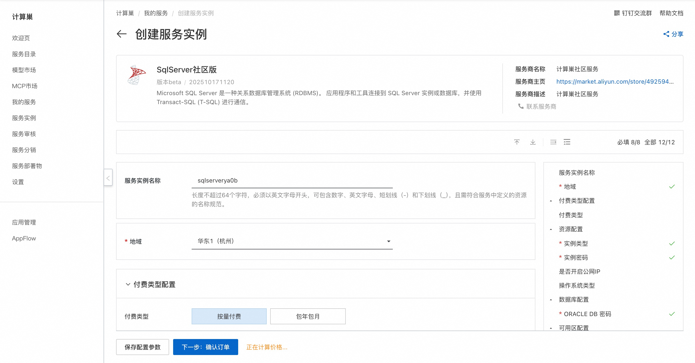
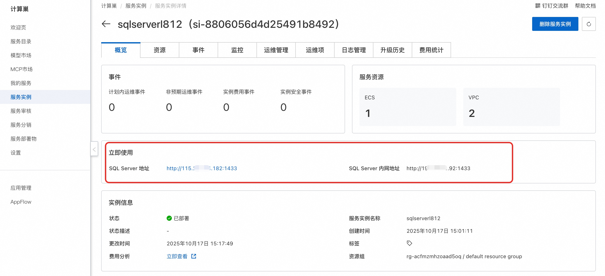
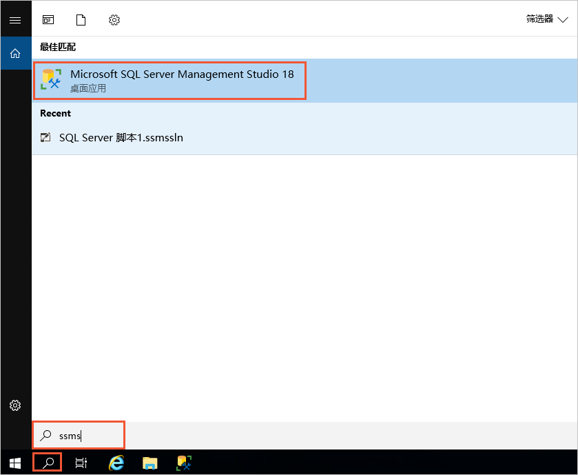
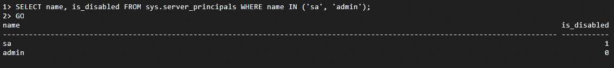

🌟 服务简介
SQL Server是由Microsoft开发和维护的关系型数据库管理系统（DBMS），广泛用于企业和组织的数据存储和管理。
🚀 部署流程
-
访问计算巢SqlServer社区版部署链接 ，按提示填写部署参数： 
-
参数填写完成后可以看到对应询价明细，确认参数后点击下一步：确认订单。
-
确认订单完成后同意服务协议并点击立即创建进入部署阶段。
-
等待部署完成后进入服务实例详情页，获取服务地址。 
📚 使用指南
链接SQL Server数据库（Windows版）
-
使用Workbench工具以RDP协议登录Windows实例。
-
在左下角搜索栏中输入ssms。 
-
单击Microsoft SQL Server Management Studio 18。
-
在连接到服务器对话框中，设置服务器连接信息，单击连接。
连接SQL Server数据库（Linux版）并禁用 sa 账号
首次使用sa账号登录SQL Server后，为了确保系统安全，建议创建新账号并禁用sa账号的登录。
- 远程连接ECS，首次登录账号使用sa。
shell
docker exec -it sqlserver /opt/mssql-tools18/bin/sqlcmd -No -S localhost -U sa
参数值说明：
-S：指定服务器的名称或IP地址。
-U：用户名。
- 创建新账号并禁用sa账号。
shell CREATE LOGIN <YOUR_USER> WITH PASSWORD = '<YOUR_PASSWORD>';替换为您要设置的账号。
执行GO使命令生效。
shell
GO
-
分配sysadmin角色。
ALTER SERVER ROLE sysadmin ADD MEMBER <YOUR_USER>;执行GO使命令生效。shell GO -
禁用sa账号。
shell ALTER LOGIN sa ENABLE;执行GO使命令生效。shell GO -
查看修改是否生效。
shell SELECT name, is_disabled FROM sys.server_principals WHERE name IN ('sa', '<YOUR_USER>');执行GO使命令生效。shell GO如下图所示，is_disabled=1表示被禁用；is_disabled=0表示启用。 
更多用法请参考SqlServer官网文档。